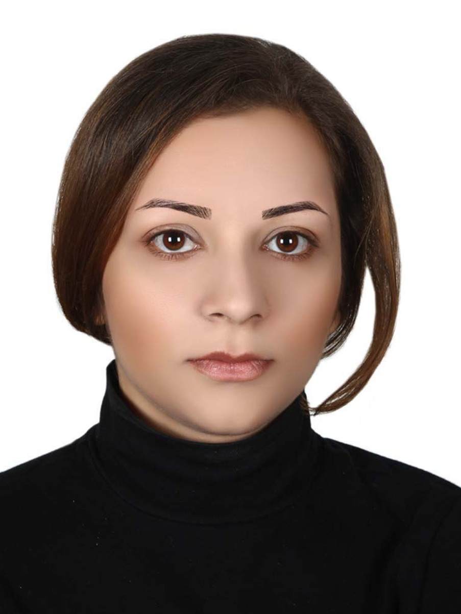

Founder, CEO & Solution Architect
Ehsan Memary
Ph.D. in Computer Science · Specialization in Cybersecurity & AI. Leading vision, architecture, and verifiable AI solutions.
Ph.D. in Computer Science · Specialization in Cybersecurity & AI. Leading vision, architecture, and verifiable AI solutions.

M.Sc. in Computer Science · Focused on zero-knowledge proof security analysis, protocol design, and verifiable systems engineering.

M.Sc. in Mathematics · Specialization in Cryptography & AI. Driving mathematical foundations for privacy-preserving verification.

B.Sc. in Economics · Building on-chain verification infrastructure, cryptographic settlement flows, and decentralized trust layers.

LL.M. / M.Sc. in Law · Specialization in Compliance & Responsible AI. Aligning technical verification with regulatory and ethical standards.